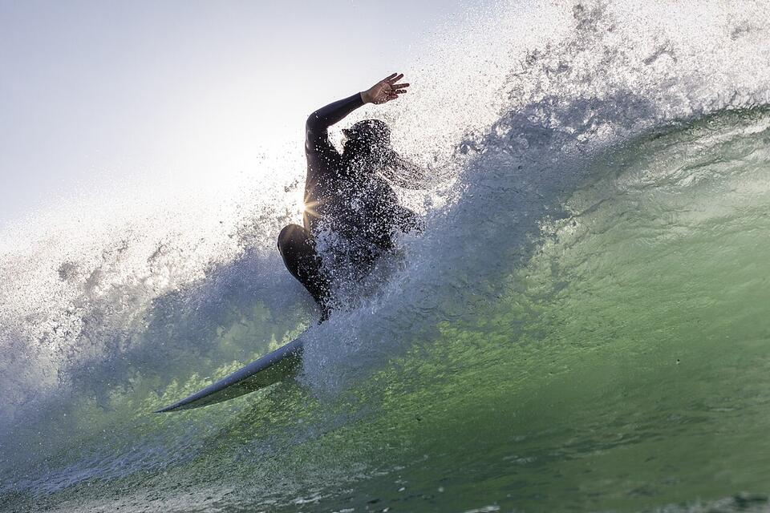
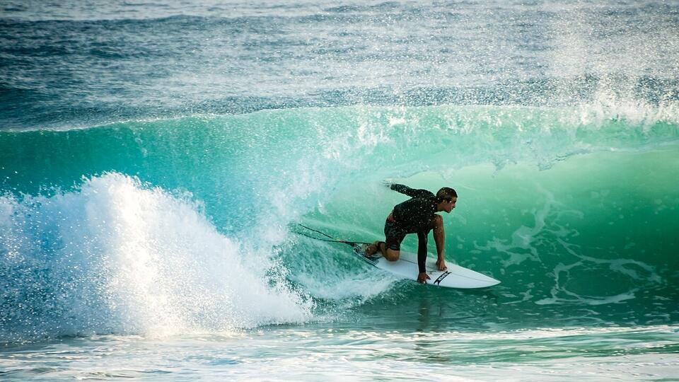
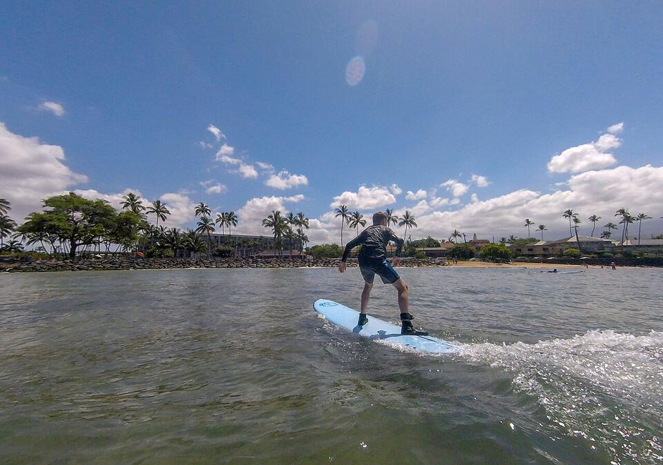

Visual references and art direction for a realistic, real-time surfing visualization seen from a continuous rear chase camera. Every image below is a Creative Commons or public-domain photograph from Wikimedia Commons, credited under its card. The full research lives in docs/research/ in the repository.



Starting values come from studying follow-cam, pole-cam and drone rigs. A reviewer should watch the clips below before we lock them.
Spend modelling, texture and animation effort on the back, shoulders, legs, feet on the deck and hands. Wet neoprene hides deformation and reads strongly in silhouette, so milestone 1 starts in a spring suit. Bare skin is a variant until it passes the character bake-off. Boards read through their materials: sanded finish, wax, tail pad with kick, resin tints, pinlines.
A spray fan is lit from behind, frozen and coarse at the edges. Offshore wind tears a veil off every lip, and catches a rainbow when the sun is behind the camera. Droplet shapes drive the particle sprites.
At 1440p, one metre covers about 3 pixels at 500 m and 0.15 pixels at 10 km. Beyond about 2 km only silhouette, tone and haze remain, so environments are stacked silhouette bands, mid-distance cliffs and impostor vegetation. Detailed buildings and beaches aren't needed.
These clips were found by search but could not be watched from the research environment. The notes say what to look for.
Desktop Chrome, WebGL2, Three.js, 1440p at 60 fps. The water renderer gets first claim on the frame budget.
| Visual quality | Cost | Approach |
|---|---|---|
| Physical sky, moving sun, golden hour, haze | cheap | Precomputed atmosphere baked into a sky LUT shared with the water |
| Sun shadow on the board; water bounce light on the body | cheap | One tight 2048² shadow map; lower-hemisphere sea lighting plus a mirrored-sun fill |
| Backlit spray, droplets, rainbow | cheap | GPU particles with forward scattering, frozen-shutter look |
| Wet skin and neoprene, drying over time | moderate | Clearcoat water film, wetness masks, droplet normals |
| Dramatic clouds | moderate | 2D layers, relit cloud cards, cloud shadows |
| Skin subsurface scattering | approximate | Pre-integrated skin plus wrap transmission |
| Hair | cards only | Short wet clumped hair is the easy case |
| Volumetric clouds, ray-marched light shafts | too costly | Fake shafts in screen space |
| Surfer reflected in the water | too costly | Skip; real footage rarely shows it clearly |